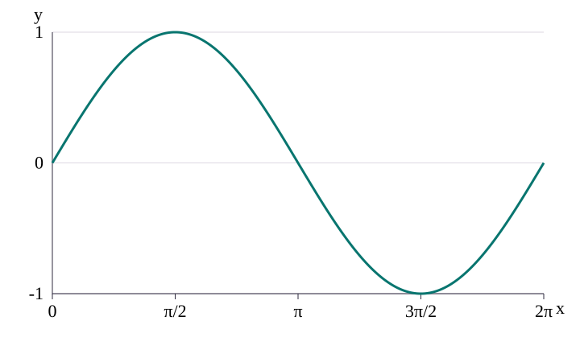
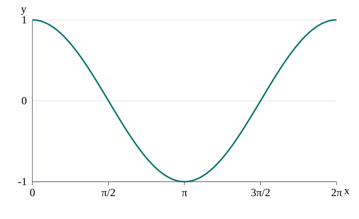
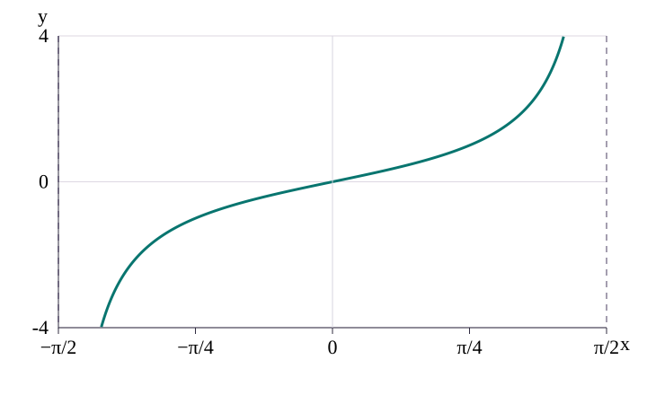
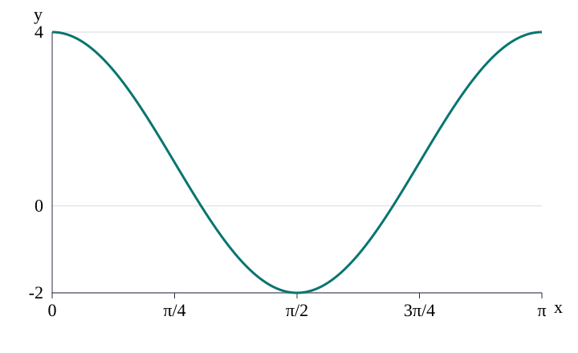

Read the wave.
Then move it.
A transformed trigonometric graph keeps the same base shape. Three numbers tell you how tall it is, how quickly it repeats, and where its centre sits.
Begin with the three base graphs
- A graph places the input angle x along the horizontal axis and the function value y along the vertical axis. Unless a degree symbol is shown, angles here are in radians.
- A cycle is one complete repeating shape. The period is its horizontal length. The midline is the horizontal centre of a wave; its amplitude is the distance from that centre to a peak.
- A vertical asymptote is a vertical line which the curve approaches while its values grow without bound. Tangent is undefined on that line; never join its two branches across it.
- Sine and cosine have period 2\pi: one complete cycle takes 2\pi radians.
- Their amplitude is (1), so they run from (-1) to (1), with midline y=0.
- Tangent has period \pi, has no maximum or minimum, and has vertical asymptotes at odd multiples of \pi/2.
- The period is the horizontal distance for one full repeat. The midline is the horizontal centre of the wave. The amplitude is half the distance from the maximum to the minimum.



What tells you
- (a) is the signed vertical scale. The amplitude is (|a|), and a negative (a) reflects the wave in its midline.
- (b) changes the horizontal scale. For sine and cosine, T=\dfrac{2\pi}{|b|}. For tangent, T=\dfrac{\pi}{|b|}.
- (c) is the vertical translation, so the midline is y=c.
- The same reading applies to cosine. A horizontal shift inside the brackets is read as a shift of the input.
Worked example: read three constants
For (y=3\sin(2x)+1), the coefficient (3) gives amplitude (3), the coefficient (2) gives period 2\pi/2=\pi, and (+1) gives midline y=1. Therefore the range is
Read a, b and c from a graph
- Read the maximum and minimum (y)-values.
- Compute a=\dfrac{\text{maximum}-\text{minimum}}2 and c=\dfrac{\text{maximum}+\text{minimum}}2.
- Measure one repeat horizontally. That is the period (T).
- Use b=2\pi/T for sine or cosine, and b=\pi/T for tangent.
Worked example: maximum and minimum
The graph of (y=5-3\cos(2x)) has (-1\le\cos(2x)\le1). The minus sign reverses which end gives the maximum:
- Maximum: (5-3(-1)=8).
- Minimum: (5-3(1)=2).
- Period: 2\pi/2=\pi.
Answer: greatest value (8), least value (2), period \pi.
Your turn
A negative coefficient multiplies a cosine wave. What happens to its amplitude?
Ranges and squared shapes
Start with the range of the base function, then apply each outside operation to both bounds. Squaring changes ([-1,1]) into ([0,1]), because a square cannot be negative.
Worked example: a squared sine
- (0\le\sin^2(3x)\le1).
- Multiply by (4): (0\le4\sin^2(3x)\le4).
- Subtract (7): (-7\le g(x)\le-3), where (g(x)=4\sin^2(3x)-7).
Worked example: rewrite before finding the range
For (f(x)=7\cos^2x-3\sin^2x+2), use sin^2x=1-\cos^2x:
- 1-\cos^2x+2">f=7\cos^2x-3<span class="math-source" data-tex="1-\cos^2x">1-\cos^2x</span>+2.
- f=10\cos^2x-1.
- Since 0\le\cos^2x\le1, the range is (-1\le f(x)\le9).
More worked examples
Sketch on 0\le x\le\pi
- Maximum points occur when (cos(2x)=1): ((0,4)) and \pi,4.
- The minimum occurs when 2x=\pi: \pi/2,-2.
- Crossings of the midline y=1 occur at x=\pi/4,3\pi/4.
- Join ((0,4)\to\pi/4,1\to\pi/2,-2\to3\pi/4,1\to\pi,4) with a smooth cosine curve.

Describe transformations
To map y=\sin x onto (y=4\sin(2x)-3), apply the operations in this order:
- Stretch parallel to the (x)-axis by scale factor (1/2), because (x\mapsto2x).
- Stretch parallel to the (y)-axis by scale factor (4).
- Translate by ((0,-3)).
Your turn
The input changes from x to 5x. What happens to the period?
Key ideas
- For (a\sin(bx)+c) or (a\cos(bx)+c): amplitude (|a|), midline y=c, period 2\pi/|b|.
- For (a\tan(bx)+c): period \pi/|b|; asymptotes remain essential.
- Find a range by applying outside operations to the base range.
- For a sketch, mark endpoints, extrema and midline crossings before drawing the smooth curve.
More worked examples
These worked examples keep the original conditions, values and targets. Each numbered line shows the algebra a learner should write.
Read constants and range
- 1. Page 3. For the annotated curve y=3\sin x+1, the maximum is 4 at x=\frac{\pi}{2} and minimum is −2 at x=\frac{3\pi}{2}. Thus |a|=\frac{4-(-2)}2=3, c=\frac{4+(-2)}2=1, period P=2\pi, so b=\frac{2\pi}{P}=1. The curve rises at x=0, hence a=3.
- 2. Page 4. Example 1: for a curve y=a+b\sin x with maximum 1 and minimum −2, write a+b=1 and a-b=-2. Adding gives 2a=-1\Rightarrow a=-\frac12; subtracting gives 2b=3\Rightarrow b=\frac32.
- 3. Page 4. Example 2: the transformed cosine has maximum 5, minimum 1 and period 4\pi. Therefore amplitude |a|=2, midline c=3, and b=\frac{2\pi}{4\pi}=\frac12, giving y=3+2\cos\left(\frac{\theta}{2}\right).
- 4. Page 5. Example 3: for y=a+\tan(bx), the graph passes through (0,\sqrt3) and has nearest positive asymptote x=\frac\pi4. Thus a=\sqrt3 and \frac{\pi}{2b}=\frac\pi4\Rightarrow b=2. Check x=-\frac\pi6: \sqrt3+\tan(-\frac\pi3)=0.
- 5. Page 5. Example 4: for y=a\tan(x-b)+c, asymptote x=\frac{3\pi}{4} gives b+\frac\pi2=\frac{3\pi}{4}\Rightarrow b=\frac\pi4. Since the curve passes (\frac\pi4,1), c=1. Using (\frac\pi2,3): 3=a\tan(\frac\pi4)+1=a+1\Rightarrow a=2.
- 6. Page 6. Example: for y=\frac32\cos(2x)+\frac12, begin with \cos(2x)\in[-1,1], then \frac32\cos(2x)\in[-\frac32,\frac32], then add \frac12 to obtain -1\le y\le2.
Range and given values
- 7. Page 7. Example 5: for y=2+3\sin(\frac x2) on 0\le x\le4\pi, the core range is [-1,1], then 3\sin(\frac x2)\in[-3,3], so y\in[-1,5]. Greatest 5, least −1.
- 8. Page 7. Example 6: for y=3\cos(2x)+2 on 0\le x\le\pi, \cos(2x)\in[-1,1], then 3\cos(2x)\in[-3,3], so y\in[-1,5].
- 9. Page 8. Example 7: f(x)=a+b\cos x on 0\le x\le2\pi, with f(\frac\pi3)=5 and f(\pi)=11. Substitution gives a+\frac b2=5 and a-b=11. Subtract: \frac{3b}{2}=-6\Rightarrow b=-4; back-substitute a-(-4)=11\Rightarrow a=7.
- 10. Page 8. Example 8: f(\theta)=k\sin(\theta+\alpha), k>0, 0^\circ<\alpha<90^\circ, through (0,2) and f(150^\circ)=0. Since k>0, \sin(150^\circ+\alpha)=0, so 150^\circ+\alpha=180^\circ\Rightarrow\alpha=30^\circ. Then k\sin30^\circ=2\Rightarrow k=4.
- 11. Page 9. Example 9: f:x\mapsto p\sin^2(2x)+q on 0\le x\le\pi, where p,q are positive. Since \sin^2(2x)\in[0,1], p\sin^2(2x)\in[0,p], hence q\le f(x)\le p+q.
- 12. Page 9. Example 10: f(x)=3\cos^2x-2\sin^2x on 0\le x\le\pi. Use \sin^2x=1-\cos^2x: f=3\cos^2x-2(1-\cos^2x)=5\cos^2x-2. Since \cos^2x\in[0,1], range is [-2,3].
Sketches and transformations
- 13. Page 10–11. Sketch y=2\sin(2x)+1 for 0\le x\le2\pi. Base y=\sin x; stretch vertically by 2; stretch horizontally by \frac12 because b=2; shift up 1. Period \pi, midline y=1, maximum 3, minimum −1. Key points: (0,1),(\frac\pi4,3),(\frac\pi2,1),(\frac{3\pi}4,-1),(\pi,1).
- 14. Page 11. Sketch y=3\cos(2x)+2 for 0\le x\le\pi. It starts at maximum 5, has midline y=2, minimum −1 at x=\frac\pi2, and returns to maximum 5 at x=\pi. Key points: (0,5),(\frac\pi4,2),(\frac\pi2,-1),(\frac{3\pi}4,2),(\pi,5).
- 15. Page 12–13. For 4\sin(\frac12x-30^\circ), start with y=\sin x, translate right 30^\circ to get y=\sin(x-30^\circ), stretch parallel to the x-axis by factor 2 to get y=\sin(\frac x2-30^\circ), then stretch parallel to the y-axis by factor 4: y=4\sin(\frac x2-30^\circ). Equivalently 4\sin(\frac{x-60^\circ}{2}).
- 16. Page 13. For f(x)=\frac32\cos(2x)+\frac12, part (b) asks g(x)=f(x)+k with minimum touching the x-axis. Minimum \frac32(-1)+\frac12=-1; solve -1+k=0\Rightarrow k=1, a translation up 1. Part (c): reflect in x-axis: y=-f(x)=-\frac32\cos(2x)-\frac12.
Practice
- Watch-out 1. \sin(2x-60^\circ)=\sin(2(x-30^\circ)), so inner shift is 30^\circ, not 60^\circ.
- Watch-out 2. y=\sin(2x) is a horizontal stretch factor \frac12, not a translation.
- Watch-out 3. For y=-3\cos x+2, |a|=3, so maximum 2+3=5 and minimum 2-3=-1.
- Try it 1. y=4+2\cos(3x) on 0\le x\le2\pi: range [2,6], period \frac{2\pi}{3}.
- Try it 2. Transform y=\cos x to y=3\cos(\frac x2)-1: horizontal stretch 2, vertical stretch 3, then translate down 1.
- Exam practice. For y=a+b\sin(cx) on 0\le x\le\pi, with b>0, maximum 7, minimum 1 and one full cycle, b=\frac{7-1}{2}=3, a=\frac{7+1}{2}=4, c=\frac{2\pi}{\pi}=2.
Your turn
Try each question before opening the solution.
- For (y=4+2\cos(3x)), 0\le x\le2\pi, state the greatest value, least value and period.
- Describe the transformations from y=\cos x to (y=3\cos(x/2)-1).
- The graph of (y=a+b\sin(cx)) on 0\le x\le\pi has maximum (7), minimum (1), and one full cycle. Find a, b and c.
Solutions
- (-1\le\cos(3x)\le1), so (2\cos(3x)\in[-2,2]), then (y\in[2,6]). The period is 2\pi/3.
- Horizontal stretch by factor (2), vertical stretch by factor (3), then translation down (1).
- (b=(7-1)/2=3), (a=(7+1)/2=4), and 2\pi/c=\pi, so c=2.